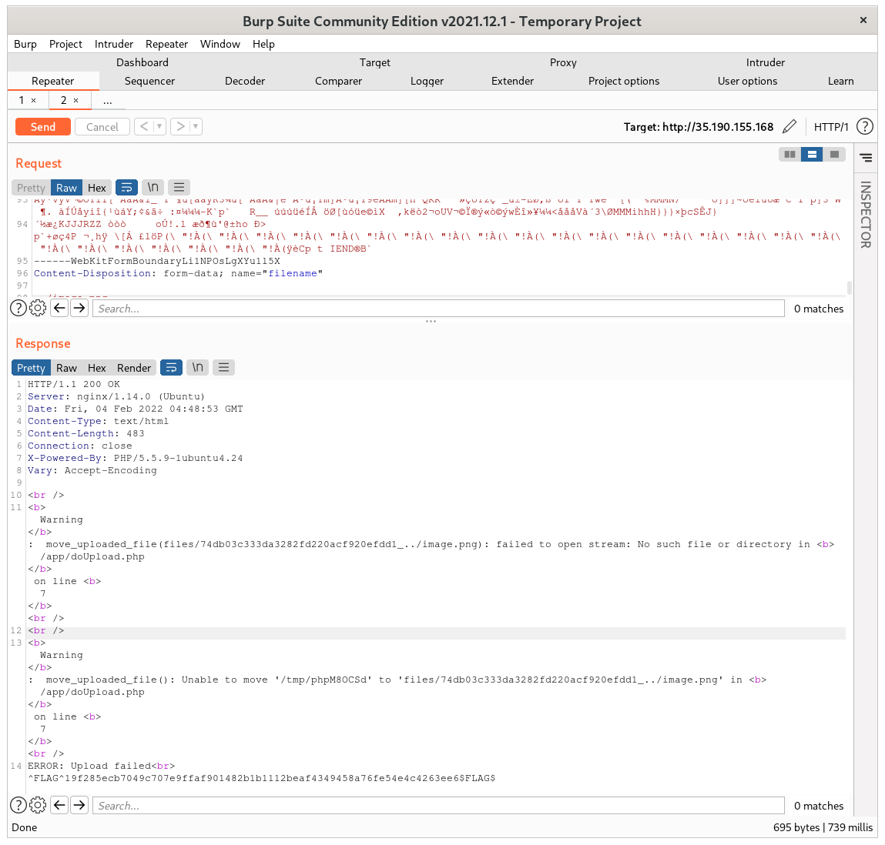

On starting the challenge, we are given an index page with a link to "upload.php". Before I start uploading files, I fuzz the site for files subdirectories and files with ffuf.
.htpasswd [Status: 403, Size: 288, Words: 21, Lines: 11, Duration: 107ms]files looks like a directory so I fuzz https://ctf/files/FUZZ but it's just forbidden .ht apache files. I ran all these 403's through a script of mine that tries various 403 bypass techniques and checks for 200 (find_and_bypass_403) but nothing worked.
Now that I have done some initial recon I start uploading files. I upload a png called image.png and I get redirected to https://ctf/files/d4713a69e268a9511038376564018882_image.png. I know that the file name is reflected in the url now so I upload the file again and intercept it in burp:
POST /18e626dfa8/doUpload.php HTTP/1.1Now I try modifying the filename in the second part of the data to "../image.png" and get a very interesting response:
So we get an error and a flag, very exciting. The error says "failed to open stream" so now I try using a filename that exists on the server. So I try the filename "../../index.php" and upload a php webshell but the server returns "ERROR: Only PNG format supported in trial."
Okay so we are only supposed to upload .png files. After researching how php can be encoded into a valid png file, I decided this was the route to take. There was also a hint suggesting looking into png chunks. So I used the tool xss2png by vavkamil (xss2png Github) to encode "" into a png. I suggest reading the article Encoding Web Shells in PNG IDAT Chunks for detailed information about this.
Okay so we can upload the encoded webshell but we don't have permission to modify index.php. Now I'll see if I can just upload it elsewhere and execute it. I upload the png with the name "../../shell.php" and see the image in my browser at files/shell.php. Now I test the webshell with curl.